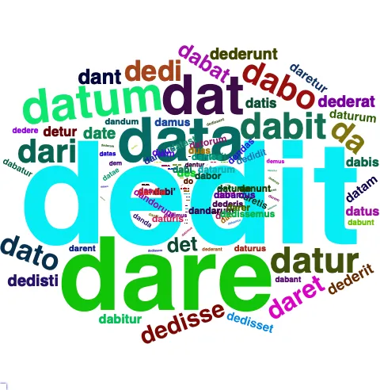
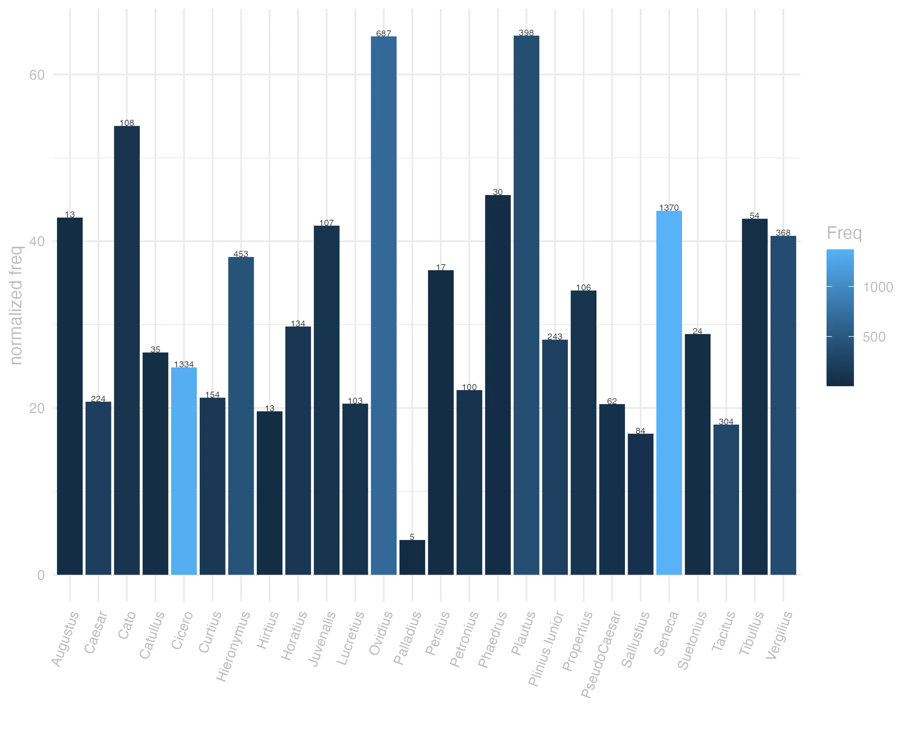
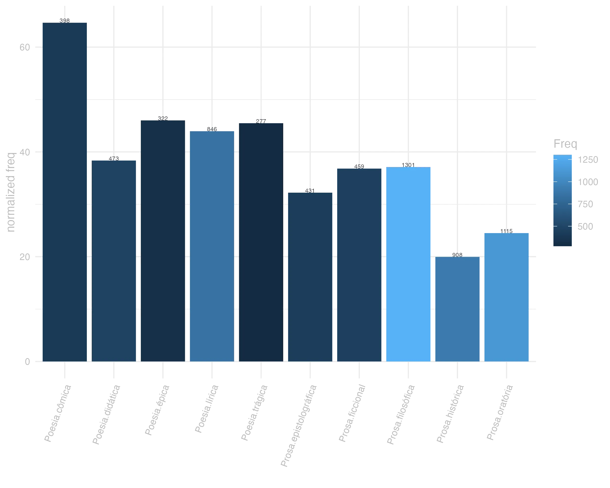
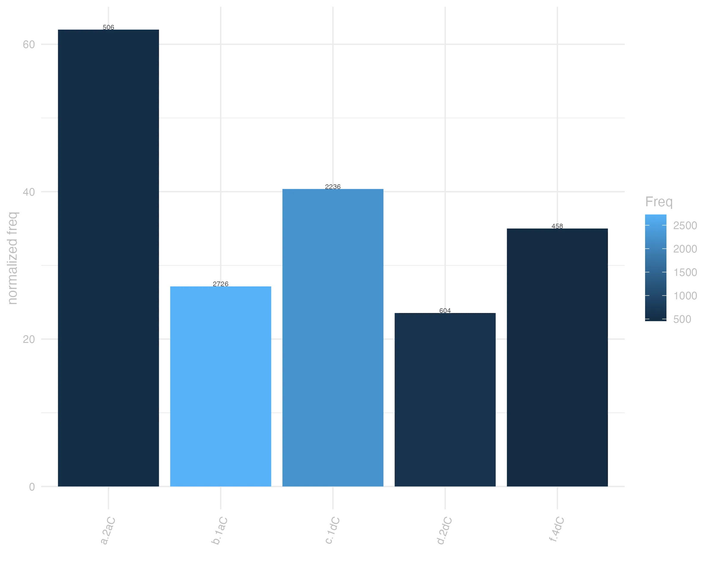

11 do
11.0.0.1 forma
Classe: verbo
Flexão: 1ª conjugação (tema em -a-)
F Dedi pret. de Do
F Diunt Plaut. por Dant
F Do -as dedi datum dare
V Do das
F Duas Plaut. por Des
F Duint Ter. por Dent, ou Dederint
F Duis Ter. por Des, ou Dederis
do presente | indicativo | 1ª pessoa singular | voz ativa
dare presente | infinitivo | ativo
dabit futuro | indicativo | 3ª pessoa singular | voz ativa
dedi pretérito perfeito | indicativo | 1ª pessoa singular | voz ativa
datum particípio passado | nominativo neutro singular
daturum particípio futuro | nominativo neutro singular

11.0.0.2 significado
Grupo semântico: Sociedade
V 2 attribuir, ou imputar por duos dativ. praeter accus.
F 2 attribuir.
V 1 dar, conceder accus. & dat.
F 1 dar, conceder. Cic.
F 3 dizer.
lexemas: abandonar, deixar, desistir, desobrigar, liberar, renunciar
categoria: posse
valências: [ACT,PAT] ou [ACT,ADDR] ou [ACT,PAT,ADDR] ou [ACT,PAT,ORIG]
synset_id: 02316304-v
lexemas: abastecer, fornecer, prover, suprir
categoria: posse
valências: [ACT,PAT] ou [ACT,EFF,PAT] ou [ACT,ADDR,PAT] ou [ACT,PAT,ADDR] ou [ACT,MEANS,PAT]
synset_id: 02327200-v
lexemas: aduzir, alegar, citar
categoria: comunicação
valências: [ACT,PAT,ADDR] ou [ACT,PAT] ou [ACT,ADDR,PAT]
synset_id: 01015866-v
lexemas: atribuir, imputar
categoria: cognição
conceito: atribuir ou creditar algo
valências: [ACT,PAT,ADDR] ou [ACT,ADDR,PAT] ou [ACT,PAT,BEN] ou [ACT,PAT]
synset_id: 00726300-v
lexemas: aviar, despachar, enviar, noticiar por despacho
categoria: movimento
valências: [ACT,DIR3,PAT] ou [ACT,PAT] ou [ACT,PAT,ADDR] ou [ACT,INTT,PAT] ou [ACT,PAT,DIR1,DIR3] ou [ACT,DIR1,DIR3,PAT] ou [ACT,PAT,DIR3] ou [ACT,ADDR,PAT]
synset_id: 01955127-v
lexemas: causar, dar, provocar
categoria: posse
valências: [ACT,PAT,ADDR] ou [ACT,PAT] ou [ACT,ADDR,PAT]
synset_id: 02316868-v
lexemas: causar, fazer, produzir, provocar
categoria: criação
valências: [ACT,PAT] ou [ACT,EFF,PAT]
synset_id: 01752884-v
lexemas: causar, fazer, provocar
categoria: criação
conceito: dar origem a
valências: [ACT,PAT] ou [ACT,PAT,ADDR] ou [ACT,ADDR,PAT] ou [ACT,EFF,PAT]
synset_id: 01645601-v
lexemas: ceder, conceder, entregar, submeter-se, sucumbir
categoria: posse
conceito: Entregar-se; render-se ou renunciar seu controle físico a outro
valências: [ACT,ADDR] ou [ACT,PAT,ADDR] ou [ACT,ADDR,PAT]
synset_id: 02316649-v
lexemas: ceder, dar, entregar, passar
categoria: posse
valências: [ACT,BEN] ou [ACT,PAT,ADDR] ou [ACT,PAT] ou [ACT,LOC,PAT] ou [ACT,ADDR,PAT]
synset_id: 02230772-v
lexemas: comentar, mencionar, notar, remarcar, reparar
categoria: comunicação
valências: [ACT,PAT]
synset_id: 01020005-v
lexemas: compensar, pagar
categoria: posse
valências: [ACT,PAT] ou [ACT,PAT,ADDR] ou [ACT,ADDR,PAT]
synset_id: 02253456-v
lexemas: comprometer, consagrar, dedicar, devotar
categoria: comunicação
conceito: Ela se comprometeu com o trabalho do Senhor.
valências: [ACT,PAT] ou [ACT,ADDR,PAT] ou [ACT,PAT,ADDR] ou [ACT,ADDR]
synset_id: 00887463-v
lexemas: comunicar, transmitir
categoria: comunicação
conceito: transmitir informação
valências: [ACT,PAT,ADDR] ou [ACT,PAT]
synset_id: 00742320-v
lexemas: conceder
categoria: comunicação
conceito: estar dispostos a concessão
valências: [ACT,PAT] ou [ACT,PAT,ADDR] ou [ACT,ADDR] ou [ACT,EFF,PAT] ou [ACT,ADDR,PAT]
synset_id: 00806049-v
lexemas: conceder, conferir, outorgar
categoria: posse
valências: [ACT,ADDR,PAT,REG] ou [ACT,ADDR,PAT] ou [ACT,PAT] ou [ACT,PAT,ADDR]
synset_id: 02263346-v
lexemas: conceder, dar, outorgar, permitir
categoria: posse
conceito: deixar ter
valências: [ACT,PAT,ADDR] ou [ACT,ADDR,PAT] ou [ACT,PAT] ou [ACT,ADDR]
synset_id: 02255462-v
lexemas: conceder, entregar, lidar
categoria: posse
valências: [ACT,ADDR,PAT] ou [ACT,PAT] ou [ACT,PAT,ADDR]
synset_id: 02294436-v
lexemas: conceder, entregar, outorgar
categoria: posse
valências: [ACT,ADDR,PAT] ou [ACT,PAT,ADDR] ou [ACT,PAT]
synset_id: 02263692-v
lexemas: conceder, entregar, outorgar
categoria: posse
valências: [ACT,ADDR,PAT] ou [ACT,PAT,ADDR] ou [ACT,PAT]
synset_id: 02255268-v
lexemas: conduzir, transmitir, trazer
categoria: movimento
conceito: transmitir ou servir como meio de transmissão
valências: [ACT,ADDR,PAT] ou [ACT,DIR3,PAT] ou [ACT,PAT,ADDR] ou [ACT,PAT] ou [ACT,PAT,DIR1,DIR3] ou [ACT,PAT,DIR3]
synset_id: 02079933-v
lexemas: consentir, deixar, permitir
categoria: comunicação
conceito: consentir vom, dar permissão
valências: [ACT,ADDR,PAT] ou [ACT,PAT,ADDR] ou [ACT,PAT]
synset_id: 00802318-v
lexemas: consignar
categoria: posse
conceito: dar para outro cuidar
valências: [ACT,PAT,ADDR]
synset_id: 02347637-v
lexemas: construir, criar, fazer, produzir
categoria: criação
valências: [ACT,PAT] ou [ACT,EFF,PAT]
synset_id: 01621555-v
lexemas: cumprir, desempenhar, realizar
categoria: relação social
valências: [ACT,PAT] ou [ACT,PAT,BEN]
synset_id: 02561995-v
lexemas: dar, dar de presente, entregar, oferecer, regalar
categoria: posse
valências: [ACT,ADDR,PAT] ou [ACT,PAT,ADDR]
synset_id: 02200686-v
lexemas: dar, entregar
categoria: posse
valências: [ACT,PAT,ADDR] ou [ACT,ADDR,PAT]
synset_id: 02199590-v
lexemas: dar, garantir, outorgar
categoria: posse
conceito: conceder, especialmente oficialmente
valências: [ACT,PAT,ADDR] ou [ACT,ADDR,PAT] ou [ACT,ADDR]
synset_id: 02317094-v
lexemas: dar, revelar
categoria: posse
conceito: transmitir ou revelar informações
valências: [ACT,PAT,ADDR]
synset_id: 02235842-v
lexemas: dar, transmitir
categoria: posse
conceito: transmitir (conhecimento ou habilidades)
valências: [ACT,PAT] ou [ACT,PAT,ADDR] ou [ACT,ADDR,PAT]
synset_id: 02296153-v
lexemas: deixar, permitir, possibilitar
categoria: relação social
valências: [ACT,PAT] ou [ACT,PAT,ADDR] ou [ACT,EFF,PAT] ou [ACT]
synset_id: 02423183-v
lexemas: emitir, soltar
categoria: comunicação
conceito: expressar de forma audível; emitir sons (não necessariamente palavras)
valências: [ACT,PAT]
synset_id: 00983824-v
lexemas: emprestar, prestar
categoria: posse
valências: [ACT,ADDR,PAT] ou [ACT,PAT,ADDR] ou [ACT,PAT] ou [ACT,PAT,LOC]
synset_id: 02324182-v
lexemas: estabelecer, produzir
categoria: criação
valências: [ACT,EFF,PAT] ou [ACT,PAT,ADDR] ou [ACT,ADDR,PAT]
synset_id: 01647672-v
lexemas: fazer, gerar, trazer
categoria: criação
valências: [ACT,PAT,ADDR] ou [ACT,PAT] ou [ACT,ADDR,PAT] ou [ACT,ADDR]
synset_id: 01629000-v
lexemas: fazer, produzir
categoria: criação
valências: [ACT,PAT] ou [ACT,ADDR,PAT]
synset_id: 01752495-v
lexemas: nomear, responsabilizar
categoria: relação social
valências: [ACT,PAT] ou [ACT,PAT,ADDR] ou [ACT,ADDR,PAT] ou [ACT,EFF,PAT]
synset_id: 02475922-v
lexemas: oferecer
categoria: posse
valências: [ACT,PAT,ADDR] ou [ACT,ADDR,PAT] ou [ACT,PAT]
synset_id: 02296726-v
lexemas: pagar
categoria: posse
valências: [ACT,PAT,ADDR] ou [ACT,PAT] ou [ACT,ADDR,PAT]
synset_id: 02251743-v
lexemas: permitir, admitir
categoria: estado
conceito: admitir a possibilidade
valências: [ACT,PAT,ADDR] ou [ACT,PAT]
synset_id: 02745486-v
V X alicui operam dare ajudar
V X alicuius rei actionem alicui dare admittir ao author, para armar demanda de alguma cousa
V X da te mihi accommodai-vos á minha vontade
F X dare aliquem ad languorem Ter Fatigar alguem
F X dare aliquem manibus Liv Sacrificar alguem ás almas dos mortos
F X dare aliquid auribus Cic Dizer alguma cousa por lisonja
V X dare ciuitatem fazer cidadaõ
F X dare fenestram Virg Abrir hum buraco na parede
F X dare paucis Ter Dizer brevemente
F X dare signum receptui Liv Tocar a recolher
V X datur cernere i, potest cerni
V 2 do tibi hoc laudi, uitio, & c attribuo-vos, ou imputo-vos isto a louvor, a vicio, etc
V X in uiam se dare por-se a caminho
V X memoriae datum est conta-se
V 2 militibus signum receptui dare dar sinal aos soldados a recolher, etc
V X nunc quamobrem has partes didicerim, paucis dabo direi em poucas palavras
V X operam dare litteris, & c applicar-se ás letras, etc
V X paenas dare ser castigado
V X pecuniam a trapezita alicui dare dar a alguem dinheiro tirando-o do camdiador
V X uerba dare enganar
V X ut nobis res dant sese, ita magni, atque humiles sumus Como as cousas se nos offerece, assim, etc
F X ut sese res dant Ter Segundo as cousas correm
11.0.0.3 uso
Ranking de frequência: 37 ª posição neste corpus
his datis mandatis eum ab se dimittit Caes.Gal.2.5.3
Com estas instruções, o despede de junto de sua pessoa. JDD()
socia cur scelerum dare poenas recusas Sen.Oed.1024
Como cúmplice dos crimes, por que recusas pagar o castigo? JDD
dat ille ueniam facile cui uenia est opus Sen.Ag.267
Dá facilmente o perdão aquele que tem necessidade do perdão. JDD
hoc responso dato discessit Caes.Gal.1.14.7
Dada esta resposta, retirou-se. JDD
inutile isti munus infantis dedi non potuit ille luce non caelo frui Sen.Oed.853
Dei a esse homem o presente inútil de um recém-nascido: ele não pôde desfrutar da luz, nem do céu. JDD
o sordidos qui acceperint improbum qui dederit Cic.Phil.6.13.10
Oh, ignóbeis os que receberam, descarado, que deu. JDD()
quis fuerit ille qui meum dono dedit corpus requiro Sen.Oed.814
Pergunto que foi que te deu de presente o meu corpo. JDD
demus itaque operam abstineamus offensis Sen.Ep.14.7
Por isso, esforcemo-nos em abster-nos de ofensas. JDD
Sabinus suos hortatus cupientibus signum dat Caes.Gal.3.19.2
Sabino, exortando os seus, dá sinal aos que o ansiavam. JDD
nummos dabat arator Cic.Ver.2.3.118.3


